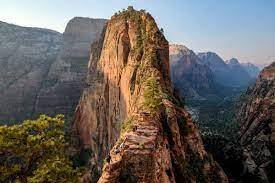
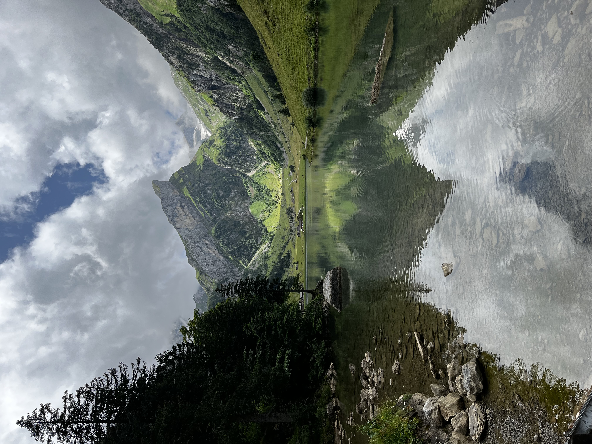
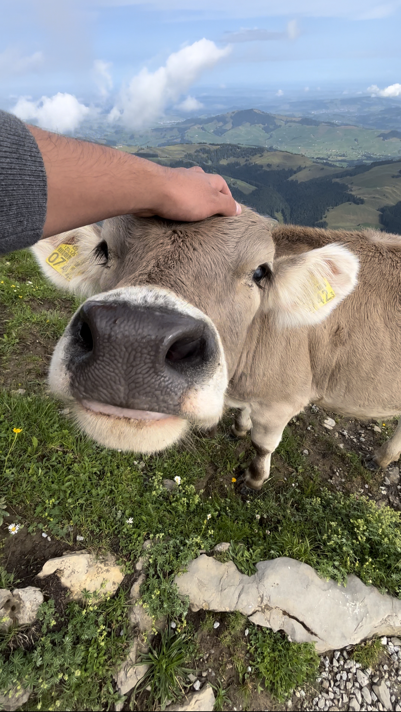
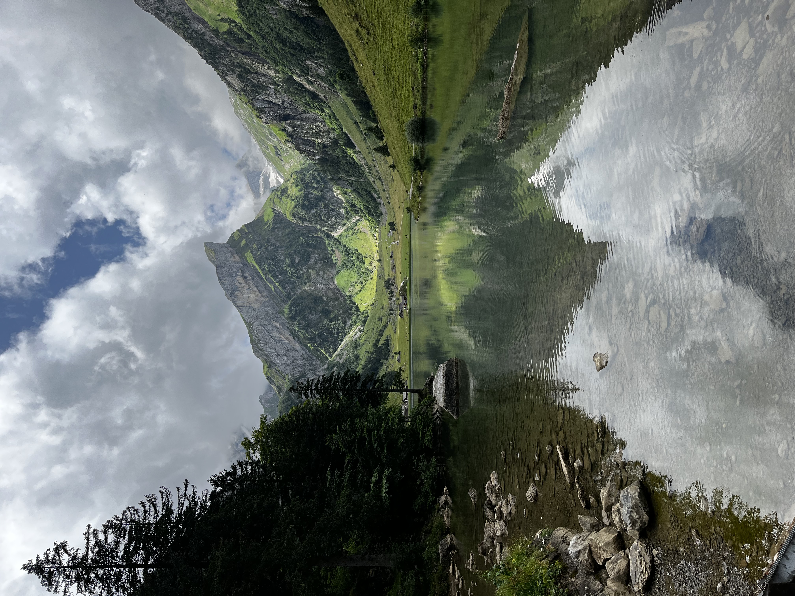
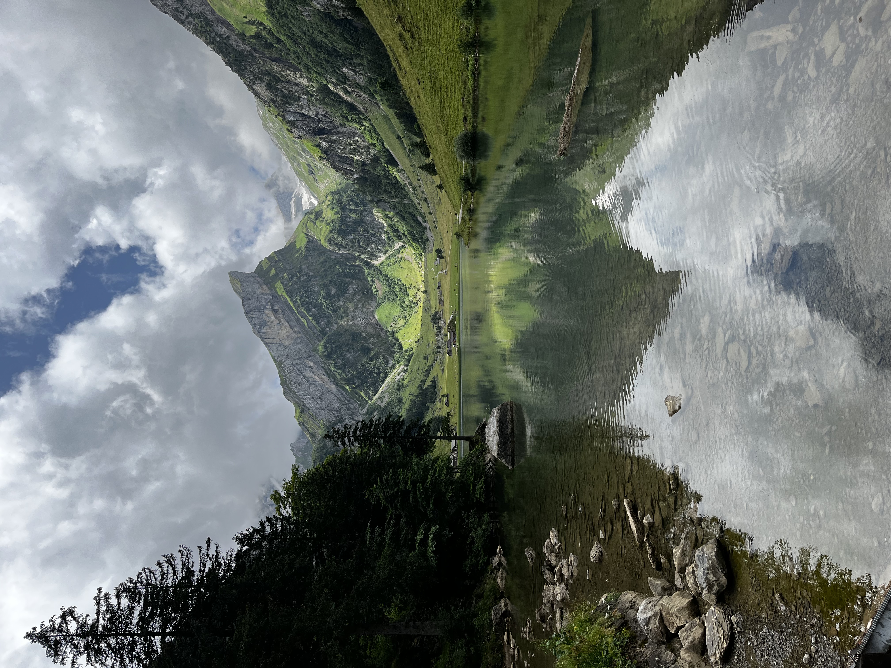

Tokyo, originally named Edo, emerged in 1603 as a fishing village. It quickly gained political power after a ‘Shogunate’, or dictatorship, took control of the area. Today Tokyo and its immediate surroundings are home to the most populated metropolitan area, with a staggering 37 million people residing in the region. Tokyo is also home to the largest urban economy in the world, and leads Japan in business and industrial economies.
Tokyo is home to 23 special wards - areas like municipalities.These areas have increased monetary control over their immediate areas, with political powers such as their own mayor and assembly. Being the cultural, political, and business center of Japan, Tokyo is also home to a great public transport system. The city has two of its own commercial airports, as well as a super-express railway.
Photo Gallery
Likes
Tokyo is home to the world's busiest intersection, Shibuya crossing!
Tokyo has more neon signs than Las Vegas.
Each year there are over 1500 earthquakes in Japan.
Yellowstone
Geographical Location: North America
Yellowstone is the first national park in the United States. It covers over 2.2 million acres, and provides an opportunity to see wildlife and explore geothermal areas. In fact, Yellowstone contains about half the world's active geysers.
Mammoth Hot Springs has a number of actively forming Travertine terraces.The drive to Lamar Valley requires some dangerous roads. But the result is amazing sunset views.The multicolored layers get their hues from different species of bacteria living in the cooler water around the spring.The buffalo were so common along the roads in Yellowstone that our mantra became "If it ain't lickin the car, we aren't stopping."If you can handle the odor, the Yellowstone Sulphur Springs is a great place to hike.
Zion National Park
Geographical Location: North America
Found in southwestern Utah, Zion National Park spreads over 229 square miles. The park is known for its sandstone cliffs, deep canyons, and vast mesas, giving it a unique beauty that everyone should try to experience . Along with this Zion offers a wide variety of Flora and Fauna that differs each season making it a hot destination all year round.
Having over 112 trails available to hike, walk, and even camp at, people from all over the world are traveling to Zion to see just how amazing it truly is. With trails that range from riverside walks all the way to hikes that have you scaling long bluffs to reach a peak, Zion has something that every outdoorsman can enjoy. However it is not all sunshines and rainbows, and there are dangers that come with these trails that all hikers should read and learn about before their expedition.
Photo Gallery

One of the most popular (and dangerous) hikes Zion has to offer A typical day in ZionThousands of years of erosion have created beautiful water tunnels such as this oneA popular river hike that everyone loves on a hot summer day Zion in the winter offers different but just as amazing views
Sofia, Bulgaria
Geographical Location: Europe
Sofia is the capital city of Bulgaria, a country located in Eastern Europe. It is part of the European Union and the primary language spoken is Bulgarian. The city’s population is around 1.3 million. In addition to its urban structures, Sofia also contains a mountain peak called “Vitosha”.
Vitosha is located 30 minutes from the capital's center, and can be reached by foot, car, and by lift. The peak has an elevation of 7,520 feet and during the summer months the average temperature is around 64 degrees fahrenheit. This makes it a great sight for any type of traveler who seeks the outdoors.
Photo Gallery
Located in the city's center, St. Alexander Nevsky Cathedral displays some of Sofia's grand architectureVitosha boulevard is often packed with both locals and tourists and contains shops, restaurants, live music, and great viewsThe peak of Vitosha mountain offers a great view of Sofia from aboveA picturesque street giving insight into the locals' lives and the city's public transport tramsOne of Sofia's famous roads, this street is paved with an interesting material: yellow cobblestones. Being one of the first streets in the entire city, it was first paved in 1907 and continues to be maintained to this day
Grand Canyon
Geographical Location: North America
The Grand Canyon is a natural geological formation located in the state of Arizona. It is a steep-sided canyon carved by the Colorado River over millions of years. The canyon is known for its size, vibrant and varied colors, and intricate rock formations. It is one of the most famous and visited natural landmarks in the United States and around the world.
Though the Grand Canyon is one of the most iconic places to travel, there are many dangers that come from such a terrain. Between 2010 and 2020, 134 have died, mainly due to extreme heat. You can see below, examples of people getting hurt due to the heat and carelessness.
Overlook the Grand Canyon snowy cliffs while the sun is settingGrand Canyon valley river during the dayCliff overlooking the rest of the Grand CanyonA mountain goat looking at the camera standing on top of rocksGrand Canyon valley waterfall with trees
Ebenalp Mountain, Switzerland

Geographical Location: Central Europe
Ebenalp Mountain graces Switzerland's Appenzell Alps with rugged beauty. Hikers explore well-marked trails, and at the peak, the iconic Ebenalp Cliff offers panoramic views. Thrill-seekers can paraglide from its heights, while the mountaintop Berggasthaus Schäfler provides a unique stay immersed in alpine charm. For a memorable dining experience, the side-of-the-mountain Aescher Restaurant offers local cuisine amidst stunning vistas. Ebenalp Mountain is a breathtaking destination that blends natural splendor with exciting activities and culinary delights, catering to adventurous spirits.
Just a stone's throw away from the majestic Ebenalp Mountain in Switzerland's Appenzell Alps, Seealpsee Lake stands as a serene counterpart to the rugged heights above. This picturesque alpine lake is a reward for those who embark on the hiking trails around Ebenalp. The crystal-clear waters of Seealpsee Lake beautifully reflect the towering peaks and lush meadows, creating an enchanting panorama. Amidst this natural wonder lies a charming lakeside restaurant where visitors can savor local delicacies while gazing upon the breathtaking scenery.
Photo Gallery

Petting a cow on EbenalpBerggasthaus Schäfler trailSeealpsee lake overlookCow above the cloudsSeealpsee lake rocks


 
